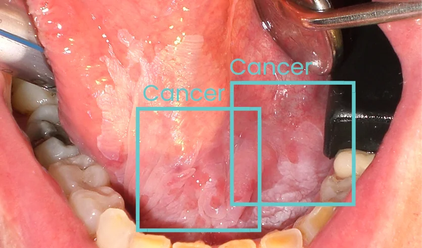

Clinical image: Oral squamous cell carcinoma showing characteristic white and red patches
Enables offline operation in remote areas with no internet connectivity, ensures patient data privacy, and provides real-time results
final_score = yolo_confidence × biomedclip_max_score
No model training required - Deploy immediately with pretrained models
Smartphone captures oral cavity photo → Upload via Streamlit interface
Resize to 640×640 → Normalize pixel values → Convert to tensor format
Detect lesions → Generate bounding boxes → Create segmentation masks → Confidence scores
Crop detected regions → Encode with BiomedCLIP → Compare with medical prompts → Class probabilities
Multiply YOLO confidence × BiomedCLIP score → Generate fusion score per lesion
Apply decision tree with patient metadata → Calculate risk score → Determine risk level & referral
Visualize detections → Display risk assessment → Show recommendations → Total time: <500ms